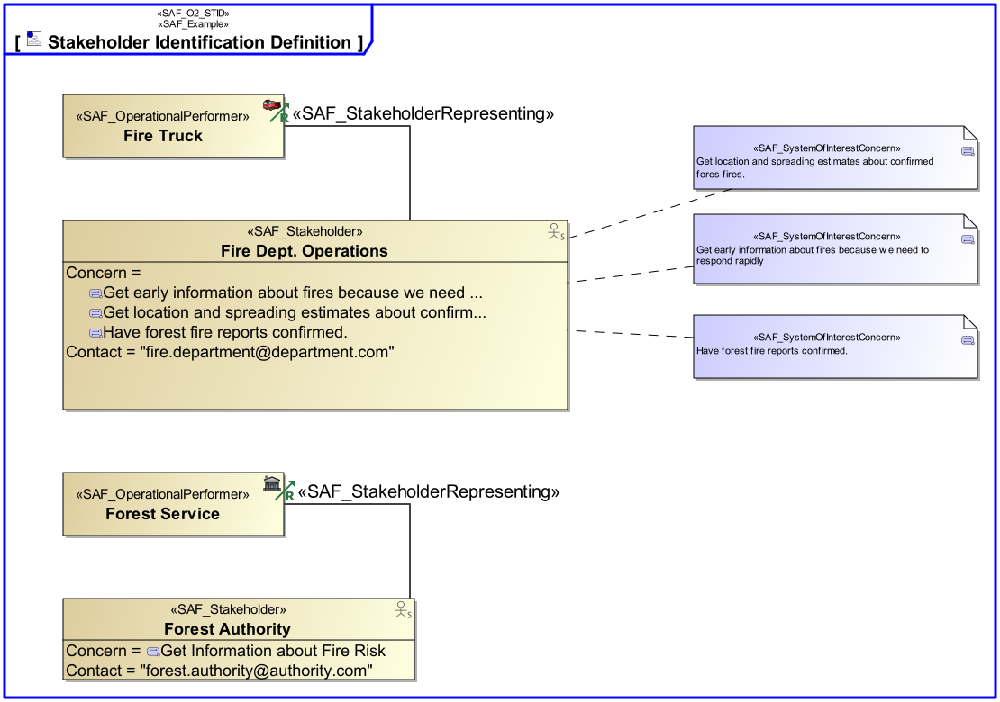

O2_STID Stakeholder Identification Viewpoint
| Domain | Aspect | Maturity |
|---|---|---|
| Operational | Taxonomy & Structure |

The Stakeholder Identification Viewpoint of the operational domain strives to identify Stakeholders, who’s concerns shall be considered, and adequatley adressed by the intended solution. Relations
The Stakeholder Identification Viewpoint supports the “Business or Mission Analysis Process” and the “Stakeholder Needs and Requirements Definition Process” activities of the INCOSE SYSTEMS ENGINEERING HANDBOOK 2023 [§2.3.5.1, §2.3.5.2] and contributes to the major Stakeholder identification.
A block definition diagram (BDD) depicting the identified, analysed, and classified Stakeholders, their interrelaions and their relations to the Intended Solution. Relations to represented Operational Performers shall also be shown.
The following Stereotypes / Model Elements are used in the Viewpoint: